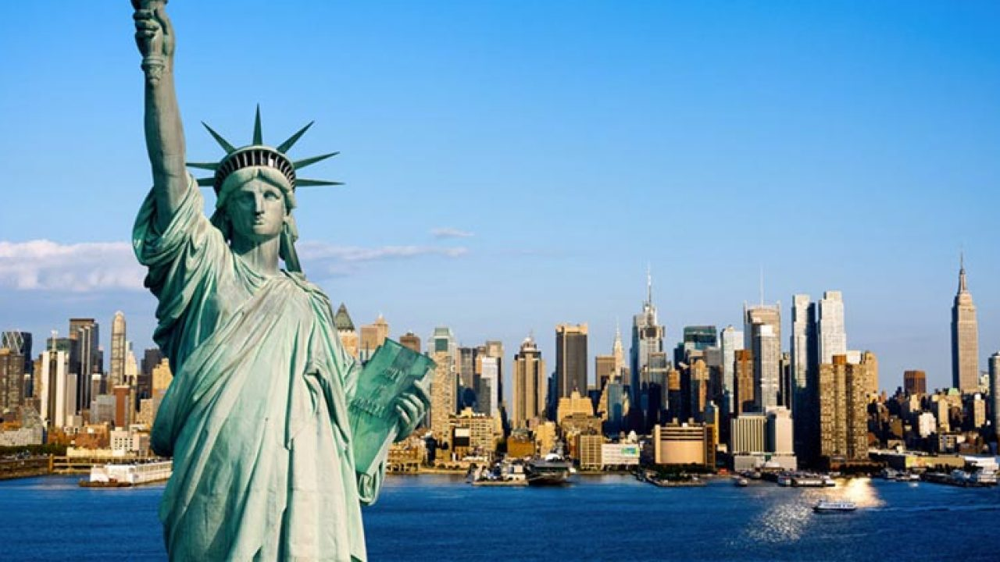
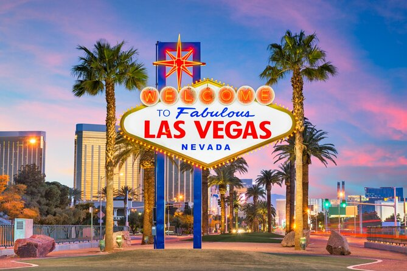
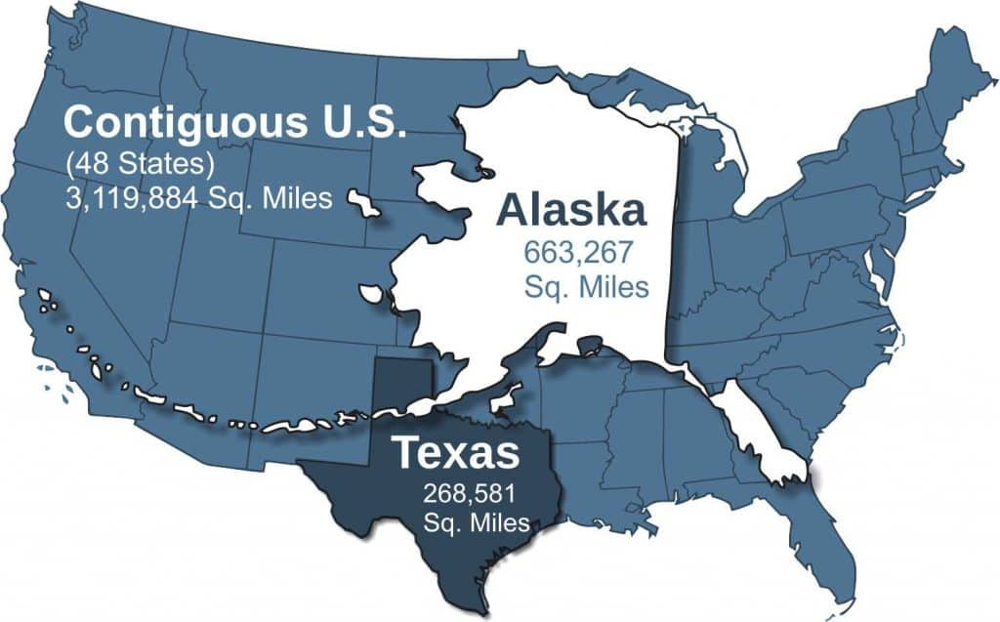
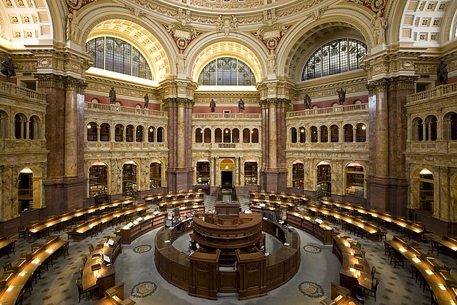

Descripcion del pais

Estados Unidos, una federación de 50 estados y un distrito federal, es una de las naciones más influyentes y económicamente poderosas del mundo. Surgido de trece colonias británicas, el país ha evolucionado tras conflictos como la Guerra Civil y una expansión significativa hacia el oeste. Su economía, la más grande globalmente, se apoya en tecnología, servicios e industria. Culturalmente diverso, refleja influencias globales en su música, cine y literatura. Políticamente, es una república constitucional con un sistema federal y juega un papel crucial en la política internacional. Enfrenta desafíos como la polarización política, el cambio climático y debates sobre derechos civiles y equidad social.
5 lugares para ir de vacaciones
1. Parque nacional de Yellowstone

Ubicado en los estados de Wyoming, Montana y Idaho, Yellowstone es el primer parque nacional del mundo. Conocido por sus géiseres, fuentes termales, y una rica vida silvestre, como bisontes y osos pardos, ofrece oportunidades únicas para hacer senderismo y observar la naturaleza.
2. Nueva York, Nueva York
Nueva York es conocida como "la ciudad que nunca duerme" y es un destino vibrante para todos los gustos. Desde icónicos rascacielos como el Empire State Building hasta museos de clase mundial como el MoMA, pasando por la Estatua de la Libertad y Central Park, hay mucho que explorar en esta metrópoli.
3. San francisco,California

San Francisco es famosa por el puente Golden Gate, los tranvías históricos, y la isla de Alcatraz. La ciudad es conocida por su diversidad cultural, su escena culinaria innovadora, y sus pintorescas calles empinadas.
4. Parque Nacional del Gran Cañon

El Gran Cañón en Arizona es una maravilla natural que ofrece vistas impresionantes y una variedad de actividades al aire libre como senderismo, rafting en el río Colorado, y observación de aves. Sus formaciones rocosas únicas y vistas panorámicas lo convierten en un destino inolvidable.
5. Las Vegas, Nevada
Las Vegas es conocida por sus brillantes luces, casinos, y su vibrante vida nocturna. Además de los espectaculares hoteles temáticos y espectáculos de clase mundial, Las Vegas ofrece una amplia gama de actividades como compras, cenas en restaurantes de renombre, y entretenimiento para todos los gustos. También es una excelente base para visitar otros lugares cercanos como el Parque Nacional del Valle de la Muerte y el Parque Nacional del Gran Cañón.
Datos curiosos
1. Consumo de pizza
Estados Unidos es uno de los mayores consumidores de pizza en el mundo. Se estima que los estadounidenses consumen alrededor de 3 mil millones de pizzas al año, lo que equivale a aproximadamente 46 rebanadas por persona.
2. Alaska tiene mas costa maritima que el resto de los estados
Alaska es el estado más grande de Estados Unidos y tiene aproximadamente 54,720 kilómetros de línea costera. Esto es más que la suma total de la costa de todos los demás estados estadounidenses.
3. La biblioteca del congreso es la mas grande del mundo
Con más de 170 millones de ítems, incluidos libros, manuscritos, periódicos, mapas, grabaciones de música y mucho más, la Biblioteca del Congreso es la biblioteca más grande del mundo. Fue establecida en 1800, y se mantiene como una fuente vital de información para el gobierno estadounidense y el público.